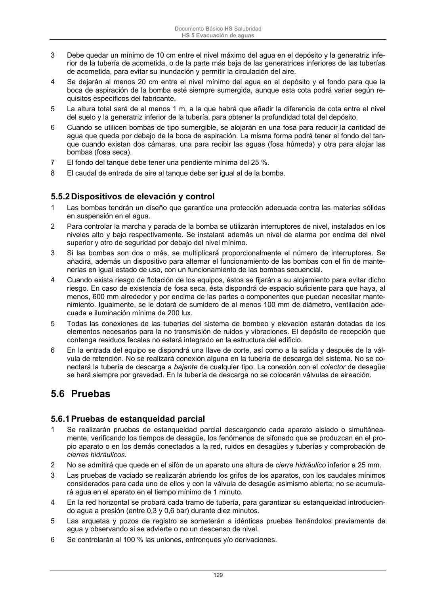

DB-HS Salubridad · edición 2022-06-14 · capa oficial
Documento DB-HS-oficial · SHA-256 del PDF 68df3caacc95f71aee2ec1ba7b2c65ae66155c21e3a8785521b8fdd4fd640d3b
Copia fiel del PDF fuente · Fuente oficial
Ficha de la disposición en la fuente oficial
Formatos: JSON del segmento · Markdown
5.6 Pruebas 5.6.1 Pruebas de estanqueidad parcial 5.6.1 Pruebas de estanqueidad parcial 1 Se realizarán pruebas de estanqueidad parcial descargando cada aparato aislado o simultánea- mente, verificando los tiempos de desagüe, los fenómenos de sifonado que se produzcan en el pro- pio aparato o en los demás conectados a la red, ruidos en desagües y tuberías y comprobación de cierres hidráulicos. 2 No se admitirá que quede en el sifón de un aparato una altura de cierre hidráulico inferior a 25 mm. 3 Las pruebas de vaciado se realizarán abriendo los grifos de los aparatos, con los caudales mínimos considerados para cada uno de ellos y con la válvula de desagüe asimismo abierta; no se acumula- rá agua en el aparato en el tiempo mínimo de 1 minuto. 4 En la red horizontal se probará cada tramo de tubería, para garantizar su estanqueidad introducien- do agua a presión (entre 0,3 y 0,6 bar) durante diez minutos. 5 Las arquetas y pozos de registro se someterán a idénticas pruebas llenándolos previamente de agua y observando si se advierte o no un descenso de nivel. 6 Se controlarán al 100 % las uniones, entronques y/o derivaciones. Documento Básico HS Salubridad HS 5 Evacuación de aguas 130
